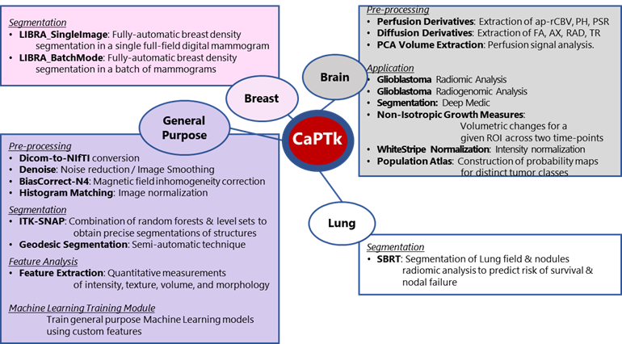

CaPTk provides a graphical interface to integrate advanced oncologic image computing and analytics tools.
"What you can do with CaPTk?"

Cancer Imaging Phenomics Toolkit (CaPTk) v.1.8.0.Alpha2 | Contact: software@cbica.upenn.edu
Disclaimer: CaPTk has been designed for non-commercial research purposes only and has not been reviewed or approved by the Food and Drug Administration (FDA). It is not intended or recommended for clinical application.
Funding: This work was supported in part by NIH 1U24CA189523-01A1.
Copyright (c) 2018 Center for Biomedical Image Computing and Analytics, University of Pennsylvania. All rights reserved
LICENSE: https://www.med.upenn.edu/sbia/software-agreement.html